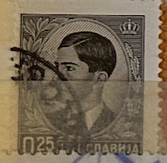
| SOURCE | TITLE| IMAGE MATCH | click to source page |
| www.ebay.com | Yugoslavia stamps 1940 King Peter II | eBay | 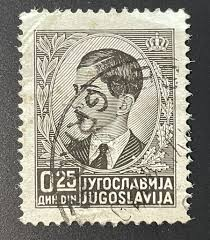 |
| www.ebay.com | DEUTSCHE BESETZUNG SERBIEN German Occupation SERBIA 1941 8d ... | 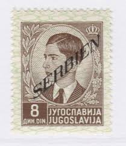 |
| worldstampsproject.org | Philately: Varieties of Postage Stamps of the Italian ... | 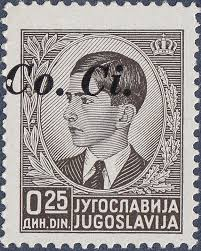 |
| www.hipstamp.com | Yugoslavia 1939 - U - Scott #150 | Europe - Yugoslavia ... | 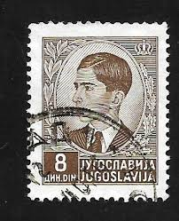 |
| www.alamy.com | MOSCOW, RUSSIA - NOVEMBER 4, 2019: Postage stamp printed in ... | 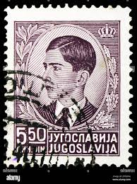 |
| stampphenom.com | Yugoslavia Kingdom 1939 -1940 Definitives - King Peter II ... | 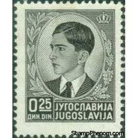 |
| commons.wikimedia.org | File:Yugoslavia-Stamp-1939-King Peter II.jpg - Wikimedia Commons | 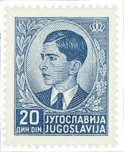 |
| www.ebay.com | Ljubljana 1941 Sass. 50 MNH 80% Stamps from Yugoslavia ... | 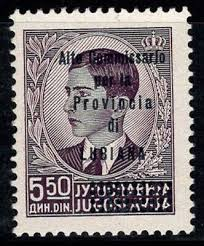 |
| www.mysticstamp.com | PH285 - 1918 2c Jose Rizal, Green, Philippines Regular Issue ... | 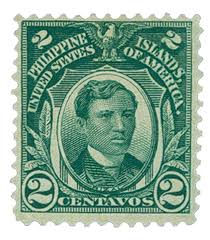 |
| www.germanstamps.net | King Peter II Overprints | GermanStamps.net | 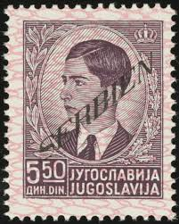 |
| worldstampsproject.org | Yugoslavia, the 1939/40 definitive issue of postage stamps ... | 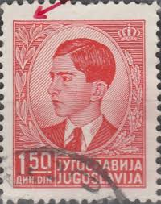 |
| www.mysticstamp.com | PHO5 - 1931 2c Philippine Islands Official Stamp, Jose Rizal ... | 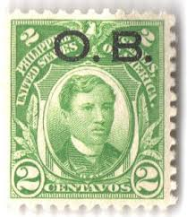 |
| en.wikipedia.org | Postage stamps and postal history of Serbia - Wikipedia | 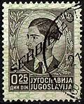 |
| www.ebay.com | Yugoslavia 1939-1940, King Peter II Karadjordjevic, Used ... | 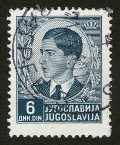 |
| www.alamy.com | King peter ii yugoslavia hi-res stock photography and images ... | 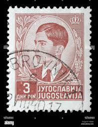 |
| www.cubacollectibles.com | Vintage Cuban Single Stamps 1855 to 1898 > 1881 SC 97 Cuba ... | 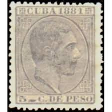 |
| www.dreamstime.com | Postage Stamp Printed in Yugoslavia Shows King Peter II ... | 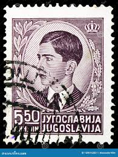 |
| postagestampguide.com | King George VI - Brown - Canada Postage Stamp | 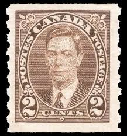 |
| www.lastdodo.com | Alberto Santos-Dumont [1873-1932] Stamp catalogue - LastDodo | 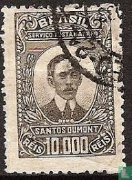 |
| www.reddit.com | Black Armband" stamp issued to symbolize mourning after the ... |  |
| www.etsy.com | Vintage 1958 Brazil Brasil Duque De Caxias Used Postage ... |  |
| worldstampsproject.org | German Occupation of Serbia: Varieties of Postage Stamps ... | 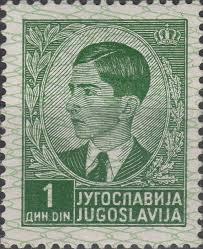 |
| www.facebook.com | Sorting out stamps from the Kingdom of Serbs, Croats and ... | 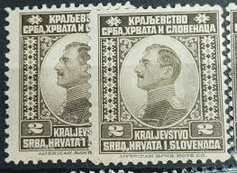 |
| spcstamps.com | PPP804 - 1941 - Stamps of Yugoslavia with overprint "Fiumano ... | 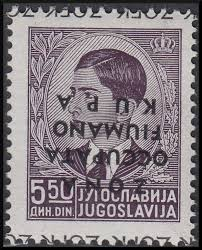 |
| www.youtube.com | Sorting Yugoslavia Stamps from Hoarding Chaos - YouTube |  |
| stampaday.wordpress.com | Iraq #O75 (1934) – A Stamp A Day | 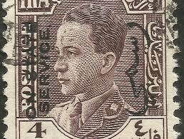 |
| www.cubacollectibles.com | Vintage Cuban Single Stamps 1855 to 1898 > 1879 SC 82 Cuba ... | 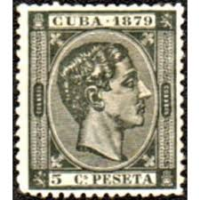 |
| www.buyhungarianstamps.com | 816-820 Yugoslavia - Serbia's First Postage Stamps, Cent ... | 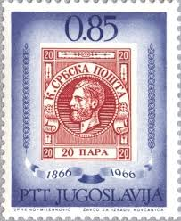 |
| cebri.org | CEBRI-Journal | Brazilian Foreign Policy of the 1920s | 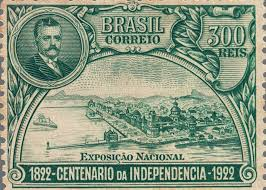 |
| postalmuseum.si.edu | Local Stamps | National Postal Museum | 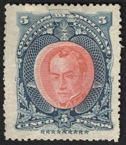 |
| www.instagram.com | British Sovereigns from the amalgamation of the Southern and ... | 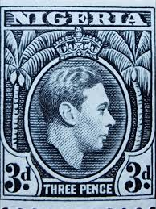 |
| www.mediabd.net | Lebanon : 2 and 1/2p President Emile Edde Surcharged ... | 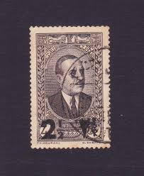 |
| www.arpinphilately.com | Buy Spain #251 - King Alfonso XII (1879) | Arpin Philately | 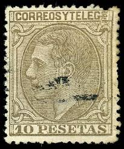 |
| en.wikipedia.org | Postage stamps and postal history of Zambezia - Wikipedia | 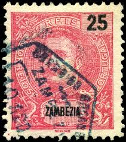 |
| www.ebay.com | Yugoslavia Stamp 1939 Scott 152 A16 Peter 16 | eBay | 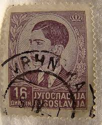 |
| www.facebook.com | Philippines 🇵🇭 1890. King Alfonso XIII definitives and ... | 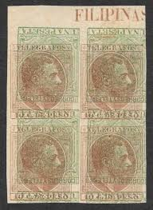 |
| www.rezonville.com | XIV. King Faisal II - Third Issue, 1954-1957 — rezonville.com | 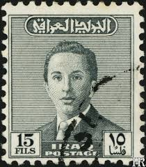 |
| www.linns.com | Stamp Identifier: Zambezia 1894-1917 | 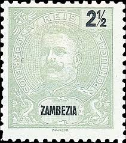 |
| www.buyhungarianstamps.com | 26-29 Croatia - Postage Due Stamps of Yugoslavia, Nos. J28 ... | 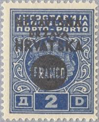 |
| postalmuseum.si.edu | Yugoslavia: A Philatelic Study | National Postal Museum | 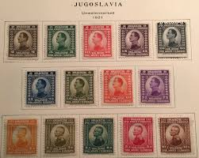 |
| en.numista.com | 10 Bani (Ministry of Finance) - Romania – Numista | 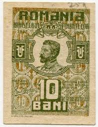 |
| www.freestampcatalogue.com | Stamps from Portugal - Freestampcatalogue.com - The free ... | 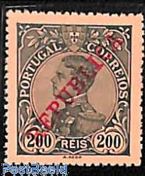 |
| deqistamps.com | SHS / Yugoslavia kingdom - Postage stamps | 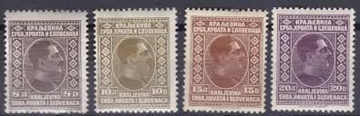 |
| colnect.com | Stamp: King Alfonso XII (Spain(King Alfonso XII) Mi:ES ZA13 ... | 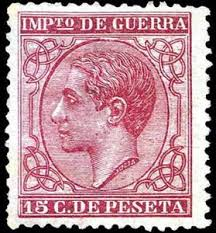 |
| classiclatinamerica.com | Latin American stamp design and its harshest critic ... | 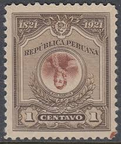 |
| www.hipstamp.com | Yugoslavia, stamp, Scott#6, used, hinged,#B-6 | Europe ... | 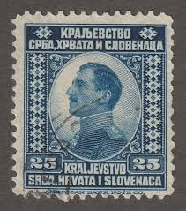 |
| www.reddit.com | Are these genuine USA stamps from 1928? : r/philately | 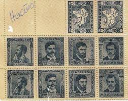 |
| www.jaysmith.com | Jay Smith & Associates: Denmark: Specialized Stamps: Postage ... | 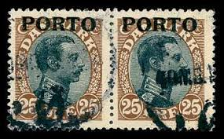 |
| stampforgeries.com | Stamp Forgeries of Cuba | Stampforgeries of the World | 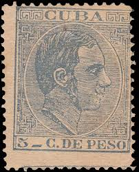 |
| www.ebid.net | GUATEMALA, Jose Batres Montufar, green 1948, 3c on eBid ... | 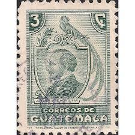 |
| picryl.com | Marca da Bollo Cent. Dieci Vittorio Emanuele III (revenue ... | 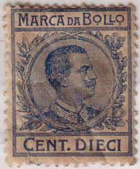 |
| www.linns.com | A stamp that stands out from 51 years' worth of Spanish ... | 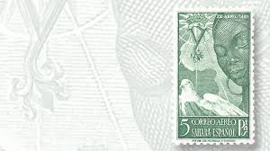 |
| www.groseducationalmedia.ca | Puerto Rico | |
| commons.wikimedia.org | File:Stamp 1941 Spain MiNr0854A-pm B002.jpg - Wikimedia Commons | |
| www.youtube.com | Some Rare Spain Postage Stamps - YouTube | |
| www.owlsandbooks.co.uk | BOOK STAMPS ANGOLA | |
| www.cubapostal.com | Cuban Postage Stamp | Continuation of Issues of New Patriots ... | |
| www.mysticstamp.com | M3435 - Yugoslavia, 200 Different Stamps - Mystic Stamp Company | |
| www.cgbfr.com | 10 Bani ROMANIA 1917 P.069 b84_0964 Banknotes | |
| mikebyers.com | American Bank Note Company 1948 El Salvador Stamp Printing ... |
{kind=link}
{kind=link}